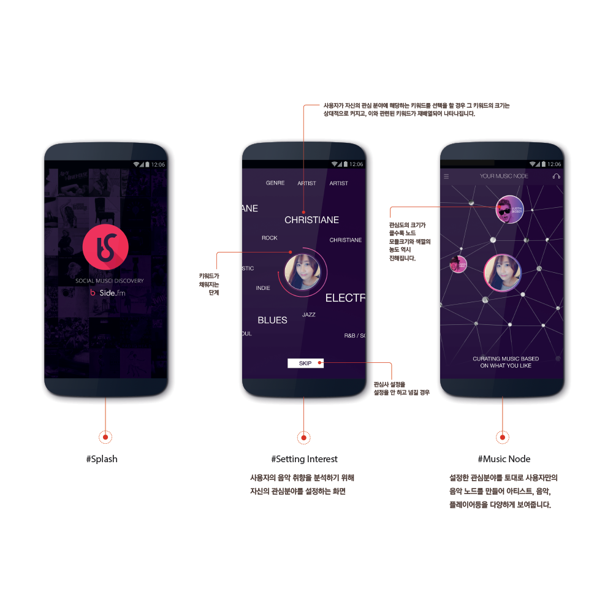
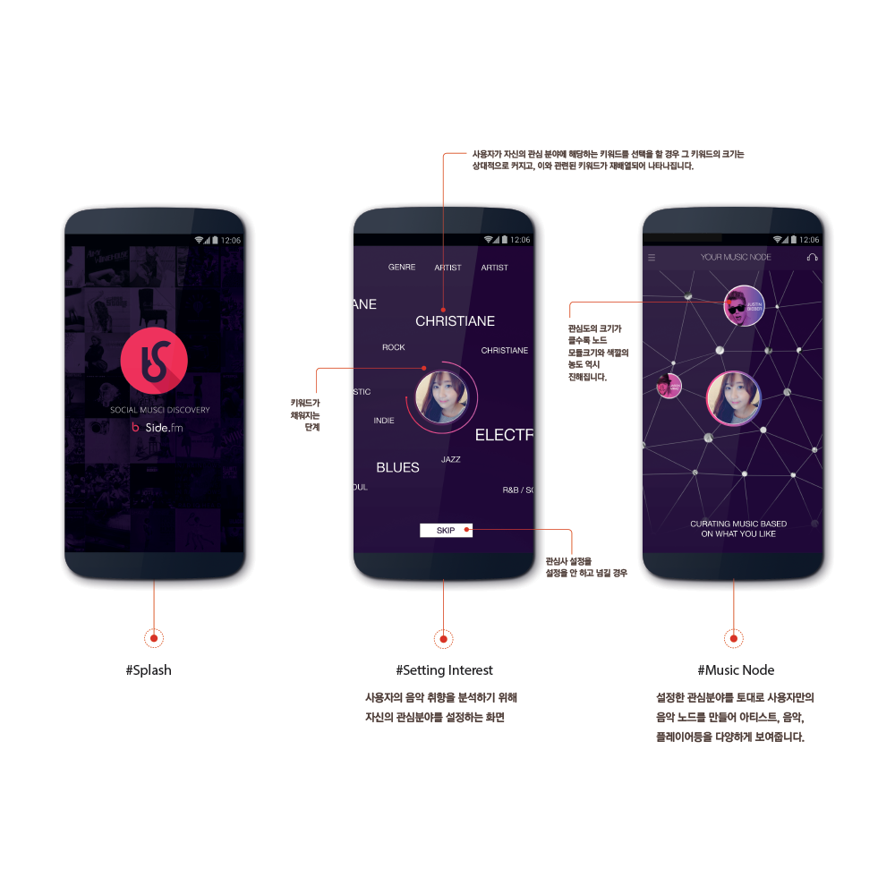
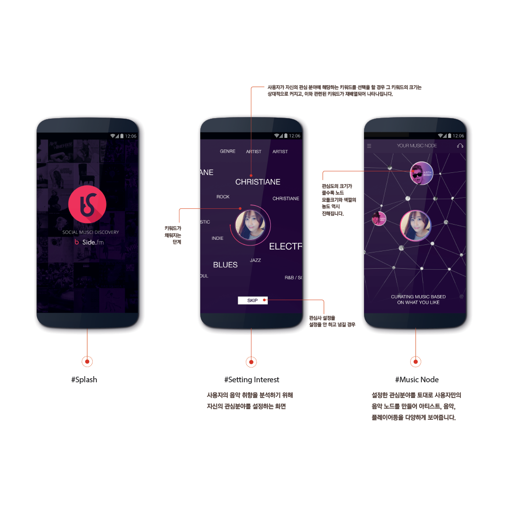

WORK
ABOUT
CONTACT

B-side Music
Request
장르, 아티스트, 분위기 등으로 분류하여 사용자의 음악 취향을 분석 후, 사용자의 취향과 비슷한 다른 사용자 즉, 음악 DJ들을 추천해준다.
Album Feed
Follow한 다양한 사용자들이 구성한 플레이 앨범 리스트들이 메인페이지에 Feed되어 보여진다.
Discovery
플레이스트를 서로 공유하고 추천을 통해해 이전에 몰랐던 숨겨진 음악을 발견할 수 있는 기회를 제공한다.
 
